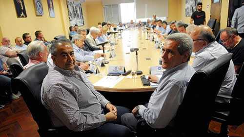

Real Chubut - Agencia de Noticias


El bono que levantó el paro

Durante más de tres horas la conducción de la central obrera analizó el borrador del decreto que impone el pago del bono de 5000 pesos. Aseguran que no será remunerativo ni puede aplicarse a cuenta de futuros aumentos.
“Esto (el bono) aleja la posibilidad del paro”, aseguró el cosecretario general de la CGT, Héctor Daer poco después de que finalizara una extensa reunión del Consejo Directivo. Durante más de tres horas los dirigentes sindicales analizaron punto por punto el Decreto de Necesidad y Urgencia (DNU) que acordaron que firmará el Gobierno. Para la conducción de la central obrera este “paleativo” mejora de manera coyuntural la situación de los trabajadores e insisten en que los cinco mil pesos no son remunerativo y no se lo puede considerar como un pago a cuenta de futuros aumentos.
Daer, quien llevó buena parte el peso de la negociación desde la central sindical, reconoció que el monto conseguido “no es suficiente” frente a la pérdida del poder adquisitivo y advirtió que ni siquiera aquellos gremios que alcanzaron un acuerdo paritario por arriba del 35 por ciento pueden rechazar este dinero.
En rigor el DNU todavía no está firmado ni publicado y los miembros de la CGT rezan para que cuando hoy se despierten esté incluido en el Boletín Oficial. Lo acordado son dos cuotas de 2.500 pesos junto a los salarios de noviembre y enero próximos y sólo es obligatorio para el sector privado. Daer en todo momento se preocupó en aclarar que el bono no puede tomarse a cuenta de futuros aumentos y advirtió que esa posibilidad, junto a cualquier otra modificación que se pretenda realizar “deberá acordarse entre las empresas y los sindicatos en paritarias”. La frase del titular del gremio de la Sanidad hace referencia al artículo cuatro del borrador del decreto que tiene una redacción un tanto ambigua. El anterior artículo también tiene sus bemoles porque sostiene que cualquier cambio en materia de plazos y montos del pago del bono se deberá discutir en el ámbito de la mesa paritaria pero está destinada específicamente para aquellas “actividades o sectores que se encuentran especialmente en crisis o declinación productiva”. Hoy esa condición está prácticamente generalizada y buena parte de las actividades económicas están ahogadas y ese artículo está prácticamente redactado para las empresas pequeñas y medianas, aunque la UIA también puso su cuota de reclamo. Daer señaló que “los empresarios quisieron que el bono sea a cuenta de las próximas paritarias” pero rechazó esa posibilidad. Es más, insistió en que “tienen que hacer el esfuerzo para poner dinero en la calle y que se mueva la rueda de la economía”. Otro dirigente sindical buscó ser más directo: “Esto es capitalismo y si quieren ganar más guita que hagan el esfuerzo”.
Entre los hombres de la conducción sindical hay coincidencia en considerar que “el Gobierno jugó fuerte” para que salga el decreto ante la reticencia que encontraron entre los empresarios. “Ellos (Cambiemos) tienen que jugar porque necesitan llegar a las elecciones y si quieren ganar deben hacer algo”, reconoció uno de los hombres fuertes de la CGT y señaló al ministro de Producción y Trabajo, Dante Sica, como el funcionario que más presionó para conseguir el acuerdo. En cuanto al secretario de Trabajo, Jorge Triaca, dijeron que si bien aportó lo suyo en las negociaciones también la definieron como la última tarea que realizó para el Gobierno nacional. Anoche buena parte de los integrantes del Consejo Directivo consideraban que Triaca no llegaba a la reunión del G20. En la lista de rumores futuros renunciados del Gobierno, Triaca la encabeza junto al actual secretario de Agroindustria, Miguel Etchevehere, pero se decía que eso iba a ocurrir luego del evento internacional. “Está muy desgastado pero no sólo hacia afuera sino sobretodo hacia el interior de la Casa Rosada. Tiene muchas críticas y ya no ayuda el que sea amigo desde hace muchos años del Presidente”, indicaron.
La reunión del Consejo Directivo fue extensa porque se leyeron y estudiaron con detenimiento los artículos del borrador que les habían acercado desde la Casa Rosada. Uno a uno de los participantes dio su opinión y casi todos coincidieron en que era lo más conveniente porque, aseguraron, “al Gobierno hay que sacarle este tipo de cosas porque es impensado que vaya a cambiar el modelo económico”, reconoció uno de los participantes a este diario. Es más, aseguró que este debe ser el camino hasta que Mauricio Macri concluya su mandato.
De todas formas hubo un cruce entre los participantes y sucedió cuando el judicial Julio Piumato planteó dudas sobre el monto del bono acordado. Según trascendió al dirigente judicial le pareció que era un monto demasiado pequeño para que levantara la posibilidad de llevar adelante un paro. La exposición de Piumato pareció no ser del agrado del titular del gremio de Obras Sanitarias, José Luis Lingeri, quien buscó desmontar ese argumento recordando que los trabajadores judiciales son uno de los pocos que tienen la suerte de tener una buena paritaria pero además de gozar de la exención del pago del impuesto a las ganancias. No pasó a mayores el intercambio porque la mayoría ya daba por desactivado cualquier medida de fuerza. Es más, uno de los dirigentes gremiales que integra el Consejo y responde a las órdenes del gastronómico Luis Barrionuevo, se animó a pronosticar que, con suerte, el próximo paro de la CGT se realizará en marzo del próximo año.
A la reunión de la CGT asistieron Daer y el otro secretario general, Carlos Acuña, además de otros integrantes de la conducción como Omar Maturano (La Fraternidad), Andrés Rodríguez (UPCN), José Luis Lingeri (Obras Sanitarias), Julio Piumato (Judiciales), Víctor Santa María (Encargados de Edificios) y Mario Calegari de colectiveros (UTA).
Fuente: Pagina 12